图片待核
CM311-1a-YST：把电视盒子改成 Armbian 小服务器
目标是让 CM311-1a-YST 从安卓电视盒子变成 Armbian 小主机，可承载 Docker、文件服务、Home Assistant 或轻量网络服务。
当前显示第 121–180 条；使用筛选时会加载全部分页。
目标是让 CM311-1a-YST 从安卓电视盒子变成 Armbian 小主机，可承载 Docker、文件服务、Home Assistant 或轻量网络服务。
为兼容 Amlogic 电视盒提供专用媒体系统。
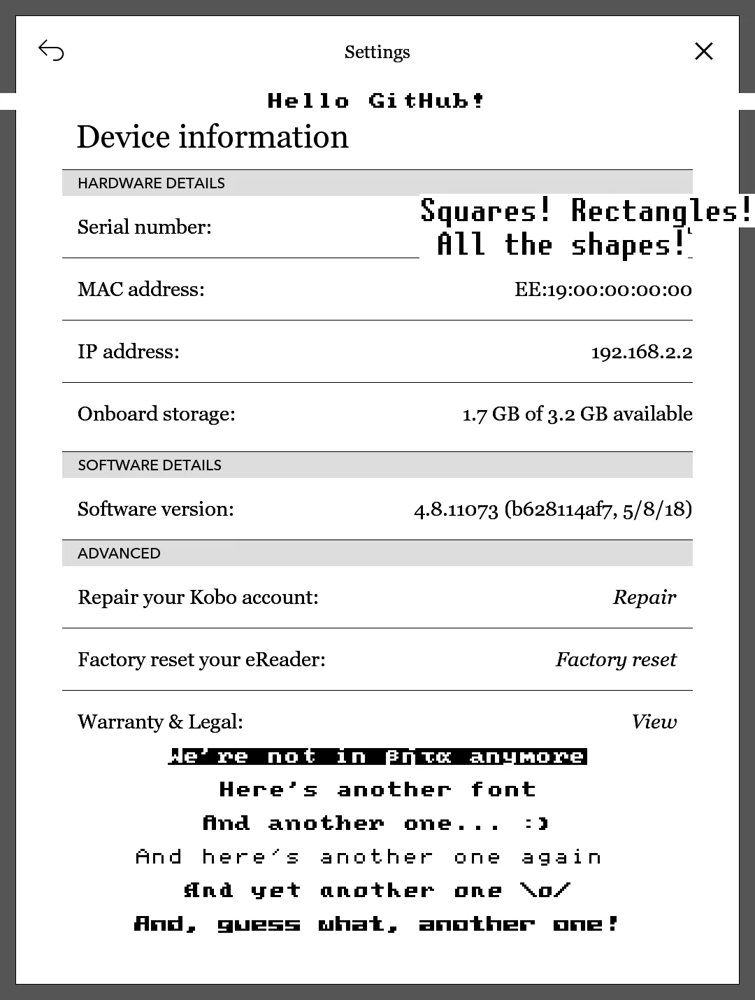
为电子墨水屏绘图提供底层工具，支撑旧阅读器看板改造。
为受支持的旧路由器提供替代固件和网络管理功能。
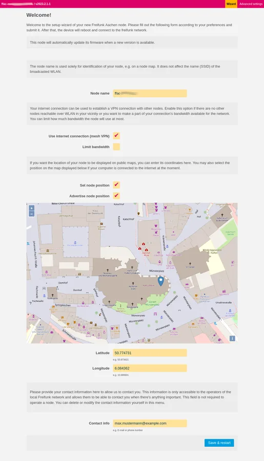
把旧路由器纳入社区或家庭 Mesh 网络。
目标是让 H96 Max X3 从安卓电视盒子变成 Armbian 小主机，可承载 Docker、文件服务、Home Assistant 或轻量网络服务。
目标是让 HK1 Box 从安卓电视盒子变成 Armbian 小主机，可承载 Docker、文件服务、Home Assistant 或轻量网络服务。
为已有 PineTime 提供开放手表固件与持续功能演进。
目标是让 Khadas VIM3L 从安卓电视盒子变成 Armbian 小主机，可承载 Docker、文件服务、Home Assistant 或轻量网络服务。
目标是让 Khadas VIM3 从安卓电视盒子变成 Armbian 小主机，可承载 Docker、文件服务、Home Assistant 或轻量网络服务。
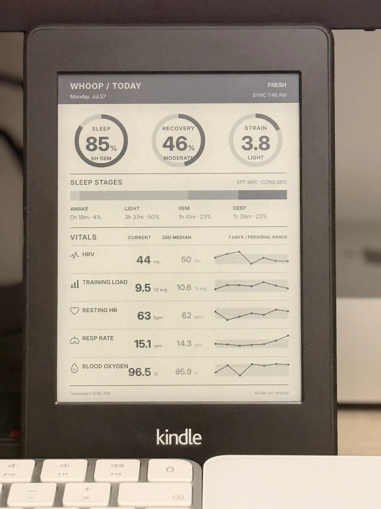
将旧 Kindle 改为 WHOOP 健康数据看板，提供 AI 辅助设置文档。
让旧 Kindle 作为 OpenAI 兼容接口的轻量聊天和消息终端。
在满足上游前提的旧 Kindle 上管理第三方软件包。
让可刷 OpenWrt 的旧路由器参与 Mesh 网络。
为官方停止更新的部分 Android 手机和平板提供替代系统。
调查把闲置手机用作桌面计算终端的路径。
目标是让 MECOOL KM3 4G 从安卓电视盒子变成 Armbian 小主机，可承载 Docker、文件服务、Home Assistant 或轻量网络服务。
为部分旧 Chromebook/Chromebox 安装替代固件以运行其他系统。
目标是让 ODROID N2 从安卓电视盒子变成 Armbian 小主机，可承载 Docker、文件服务、Home Assistant 或轻量网络服务。

将改装 Nest Mini 连接本地或云端对话代理，扩展多设备语音入口。
让部分非 ESP 的云依赖智能设备改用本地 MQTT 等控制。
为部分不再被新版 macOS 正式支持的 Mac 提供引导与驱动补丁。
为部分 IP 摄像头替换开放固件，获得可自主控制的视频流。
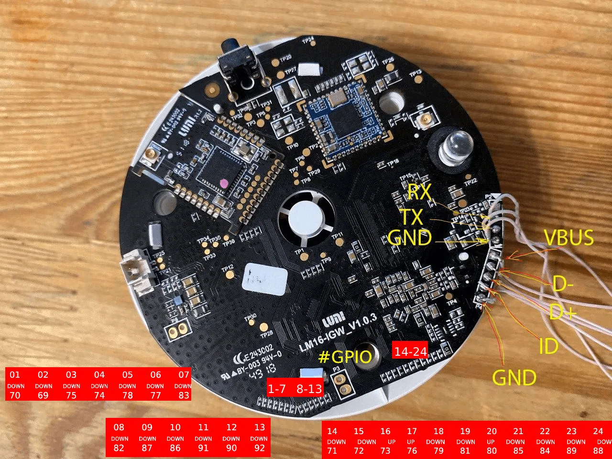
复用旧智能网关硬件运行开放系统和本地 Zigbee 服务。

用开放固件延长受支持路由器的网络功能与维护寿命。
评估在现有 reMarkable 上增加 Entware 软件包环境。
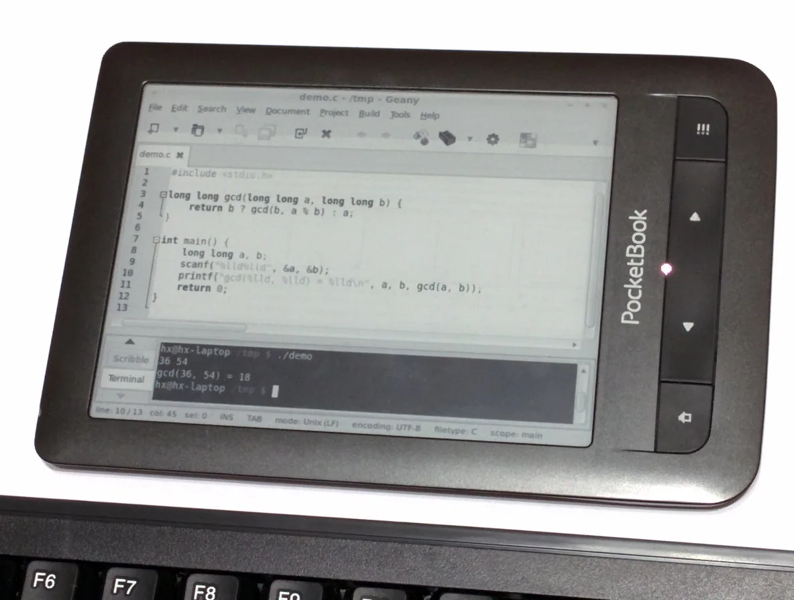
评估把闲置 PocketBook 作为电脑辅助显示器。
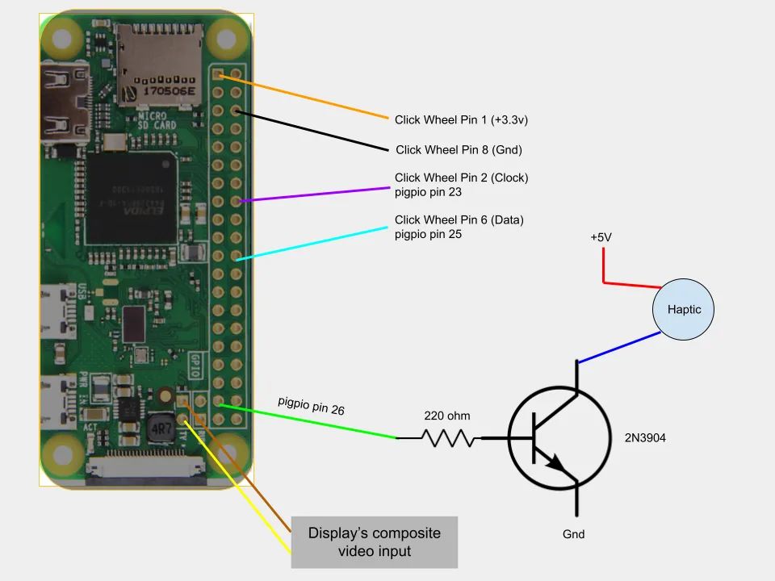
保留旧 iPod 的交互与外形，替换内部硬件成为网络音乐终端。
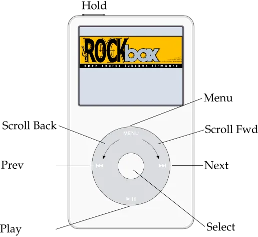
为兼容旧播放器提供开放固件和格式扩展。
保留旧 webOS 电视运行 homebrew 的历史入口。
目标是让 Tanix TX5 Max 从安卓电视盒子变成 Armbian 小主机，可承载 Docker、文件服务、Home Assistant 或轻量网络服务。

替换部分智能插座、灯具与传感器固件，恢复本地控制。
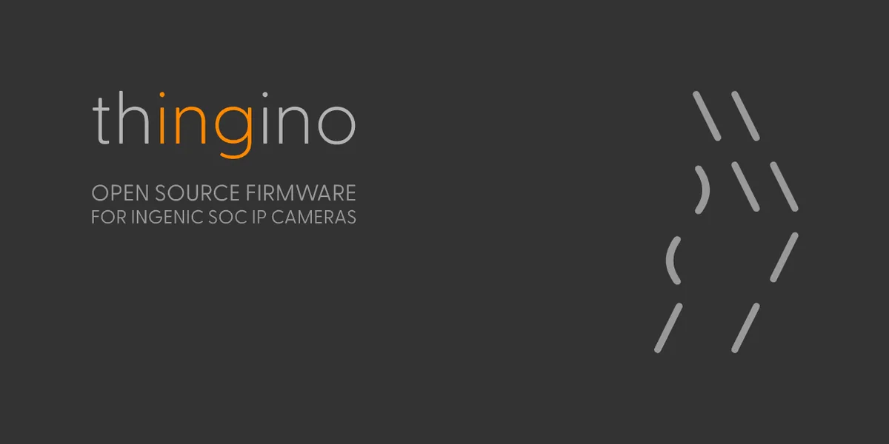
使用轻量开放固件延长受支持摄像头的本地使用寿命。
目标是让 TOX1 从安卓电视盒子变成 Armbian 小主机，可承载 Docker、文件服务、Home Assistant 或轻量网络服务。
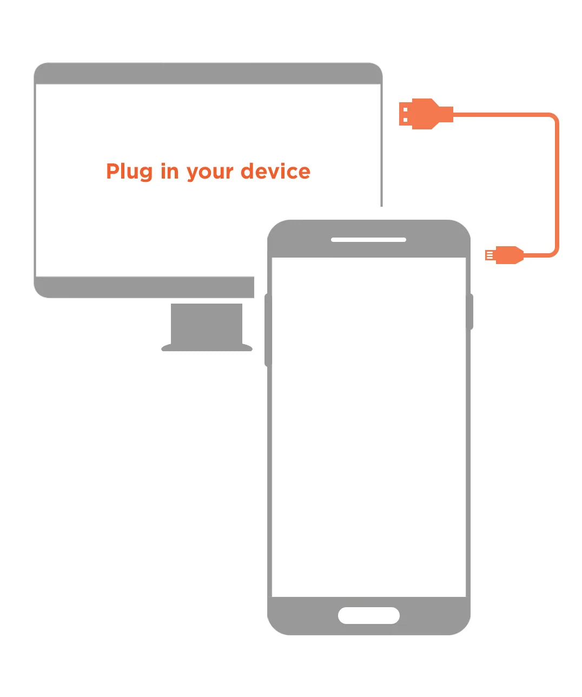
通过官方安装器为支持的手机安装 Ubuntu Touch。
目标是让 Ugoos AM6 Plus 从安卓电视盒子变成 Armbian 小主机，可承载 Docker、文件服务、Home Assistant 或轻量网络服务。
目标是让 Ugoos X3 从安卓电视盒子变成 Armbian 小主机，可承载 Docker、文件服务、Home Assistant 或轻量网络服务。

让兼容扫地机器人保留本地控制并降低厂商云依赖。
目标是让 Vontar X3 从安卓电视盒子变成 Armbian 小主机，可承载 Docker、文件服务、Home Assistant 或轻量网络服务。

为自有 webOS 电视提供社区应用安装与管理入口。
为受支持的 Kindle 提供安装社区软件的前置解锁入口。

用社区语音服务重新使用 Vector 机器人，并可接入知识问答后端。
将闲置 Linux 设备作为 Home Assistant 语音卫星。
目标是让 X88 King 从安卓电视盒子变成 Armbian 小主机，可承载 Docker、文件服务、Home Assistant 或轻量网络服务。
目标是让 X88 Pro X3 从安卓电视盒子变成 Armbian 小主机，可承载 Docker、文件服务、Home Assistant 或轻量网络服务。
目标是让 X96 Air 从安卓电视盒子变成 Armbian 小主机，可承载 Docker、文件服务、Home Assistant 或轻量网络服务。
目标是让 X96 Max+ 从安卓电视盒子变成 Armbian 小主机，可承载 Docker、文件服务、Home Assistant 或轻量网络服务。
目标是把 Xiaomi Mi Router 4A Gigabit Edition 改成可继续维护的 OpenWrt 路由器，用于拨号、旁路由、无线接入或基础网络服务。
目标是把 Xiaomi Redmi Router AX6S 改成可继续维护的 OpenWrt 路由器，用于拨号、旁路由、无线接入或基础网络服务。
目标是让 ZTE B860H V5 从安卓电视盒子变成 Armbian 小主机，可承载 Docker、文件服务、Home Assistant 或轻量网络服务。
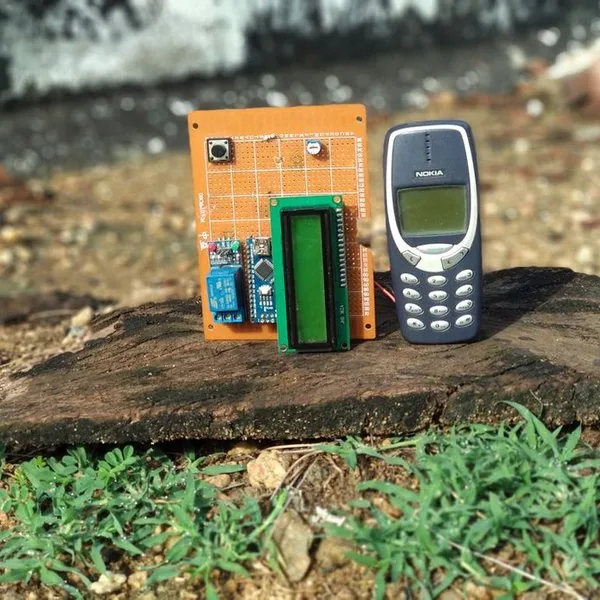
作者从旧 Nokia 类手机振动电机焊点读取来电/短信触发，再由 Arduino 和继电器切换外部负载。
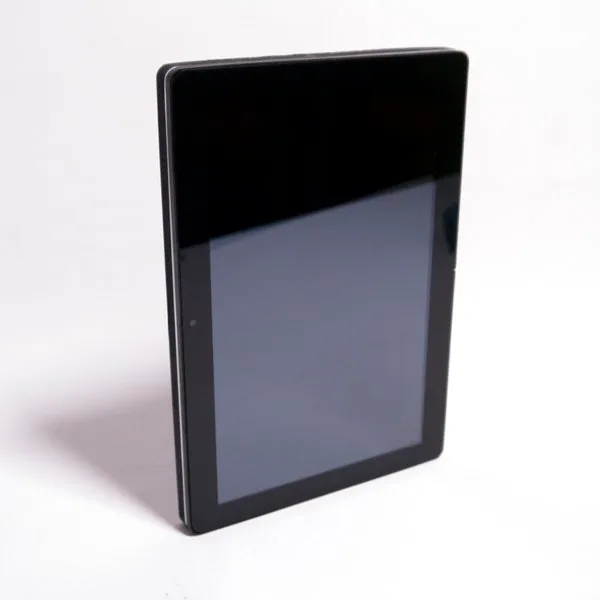
项目提出开放的机械与电气模块标准，让平板的主板、屏幕、电池和外设可升级并跨机型复用。
长期维护资料主要存在 Doozan 论坛帖和回复中，覆盖部分 Zyxel、Seagate、Synology、Pogoplug 等设备。
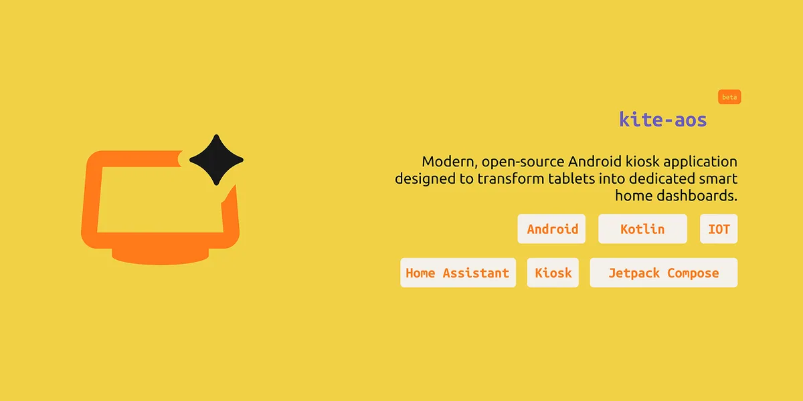
评估把闲置 Android 平板作为智能家居面板。
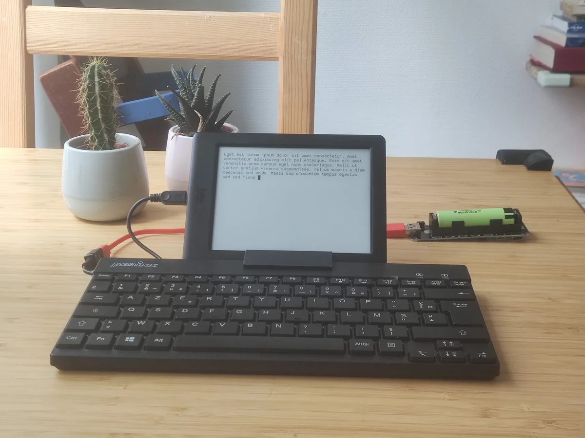
评估把旧 Kobo 作为低干扰文字输入终端。
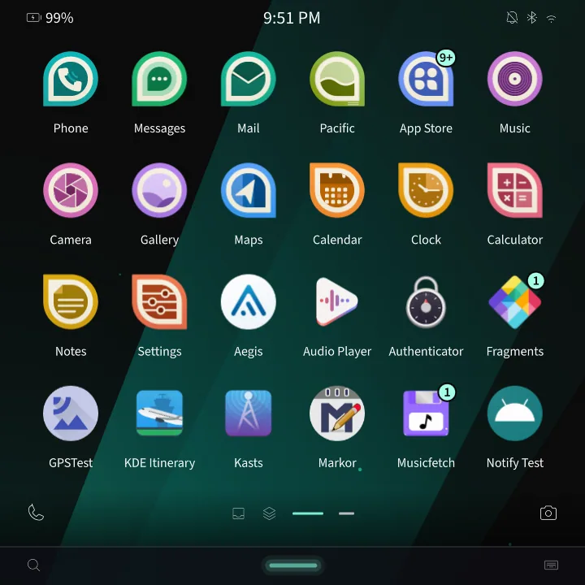
评估为列出的移动设备或板卡提供替代移动界面。
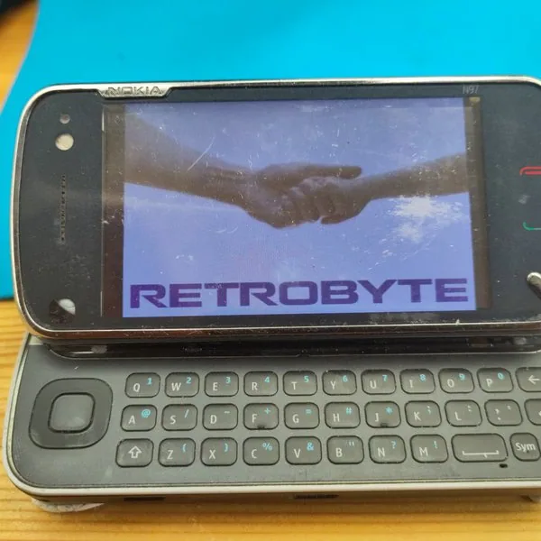
作者逆向 N97 键盘矩阵、FPC 和四线电阻触摸，计划用 Zero 形态 SBC、定制 PCB 与 3.2 英寸 HDMI 屏重建 Linux 掌机。

接管旧小爱音箱的麦克风和播放链路，连接外部 AI 服务。
项目为旧 Android 手机设计 3D 打印外壳、弹簧针 PCB、USB 2.0 和可换电池模块，已上传多份结构与 Gerber 文件。
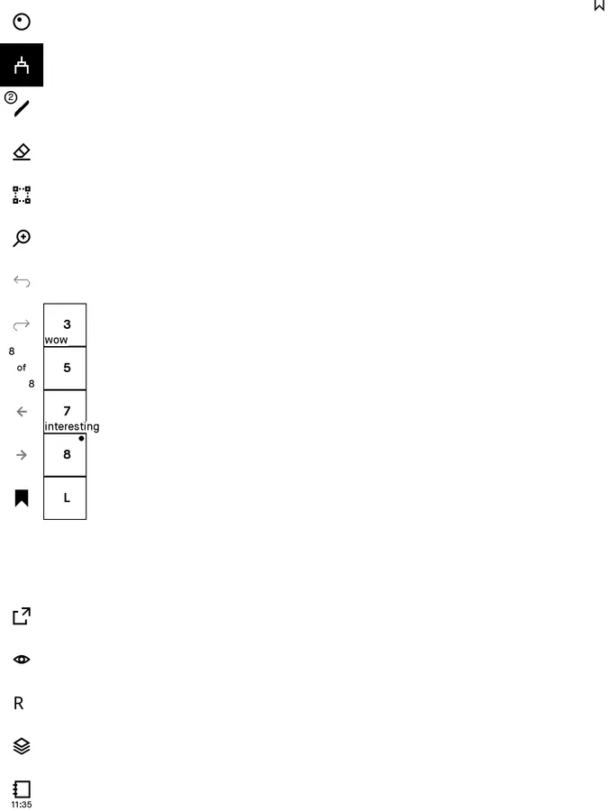
评估为旧 reMarkable 增加上游所述的额外功能。
减少一个筛选条件，或换一个设备/型号词。